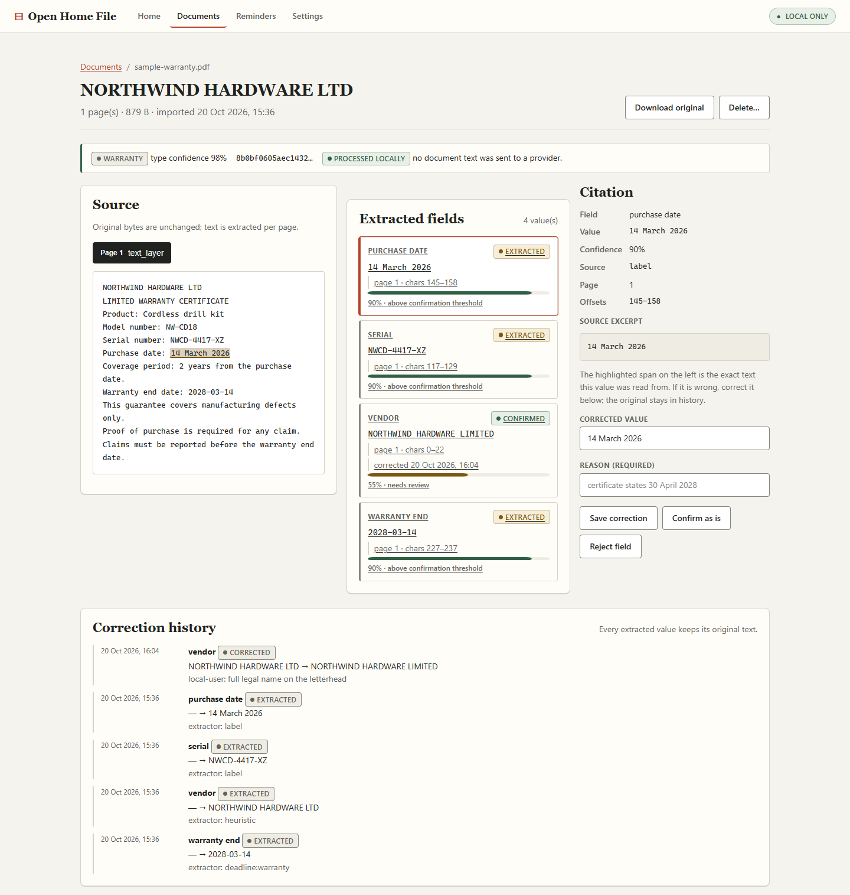

Citation or nothing.
The extractor can be wrong; it cannot be vague. Every accepted field carries a page number, a character range, a confidence score, and the extractor that found it.
Local-first household paperwork
Open Home File indexes the receipts, warranties, bills, and contracts that run a household. Every value links back to the exact page it came from. Nothing leaves your computer by default.
v0.1.0 · pre-release · Python 3.12+ · MIT
Document review
Northwind
Hardware Ltd
Cordless drill kit · NW-CD18
“Purchase date: 14 March 2026”
Suggestions stay inactive until you confirm them.
One folder on one machine. No account, no sync, no telemetry.
If a value cannot point to its page and character range, it is dropped.
Deletion checks the rows and blobs, then reports what remains.
01 The problem
Household paperwork accumulates in drawers, downloads, and inboxes. The tools that promise to organize it usually ask you to upload it first—then hide the answer behind an account and a summary.
Open Home File takes the opposite approach. It reads documents on your machine, keeps originals encrypted in a folder you choose, and makes every extracted value prove where it came from. You confirm what matters. The software keeps the receipts.
The point is not to automate judgment. The point is to make it checkable.
warranty_final_v2.pdf
somewhere in Downloads
14 March 2026
Only one of these can be checked.
02 The method
No magic answers. A small, legible workflow built around evidence, not automation theatre.
Drop a PDF, PNG, or JPEG into the loopback UI or import it from the CLI. The file is hashed, validated, and parsed, then the original is sealed at rest before any document record is written.
Every field shows its page and character offsets. Confirm it, correct it with a reason, or reject it. The original value stays in an append-only history.
A suggested reminder never becomes active on its own. Confirmed reminders keep a link to the field and citation that created them.

03 The standard
The constraints are the product. These are the ones enforced by tests, not just printed on a page.
The extractor can be wrong; it cannot be vague. Every accepted field carries a page number, a character range, a confidence score, and the extractor that found it.
No account, no hosted index, no analytics. The web UI binds to loopback, loads no external assets, and the default provider never opens a socket.
Confirm, correct, or reject. The original value, the new value, the actor, and the reason stay in an append-only history that the interface can show you.
Deleting a document removes its rows, pages, fields, reminders, exports, and original blob—then queries and file checks report anything left behind.
It does not give legal, tax, or financial advice. It does not cancel subscriptions or contact vendors. It makes the paperwork checkable; you decide.
04 Under the hood
One Python process. One SQLite database. A folder of AES-256-GCM sealed originals. The CLI and the loopback UI are thin adapters over the same Library, so there is one set of rules for reading, correcting, and deleting.
Remote provider calls are optional, budgeted, and ledgered. In the default configuration, there are no remote provider calls at all.
Read the architecture05 Take it home
Open Home File is pre-release software. There is no package on PyPI yet; the repository is the release. The synthetic samples are generated locally, so the first import contains no real household data.
Read the full quickstart# clone and enter the repository
git clone https://github.com/r-bug-r/open-home-file.git
cd open-home-file
# create and activate a virtual environment
python -m venv .venv
source .venv/bin/activate
# Windows PowerShell: .venv\Scripts\Activate.ps1
pip install -e .
homefile samples ./samples
homefile import ./samples/warranty.pdf
homefile serveOpen 127.0.0.1:8765. Ctrl+C stops it. OCR is optional and needs a local Tesseract install.
Open source · local by default